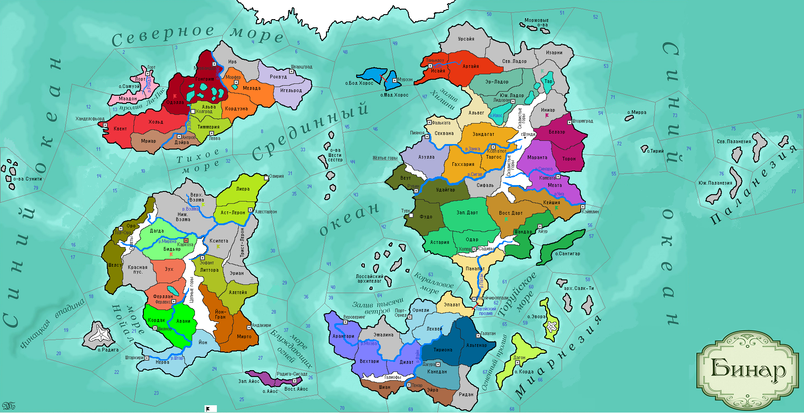

<==
| 2 |
| 3 |
| 4 |
| 5 |
| 6 |
| 7 |
| 8 |
| 9 |
| 10 |
==>

6-й ход истории мира Бинар (1125 г.)
· Фермеры Фриулеса первыми внедряют технологию трёхполья в сельскохозяйственный быт.
· В Моэдасе появляется новая религия Аквилианство, последователи которой верили в то, что древний герой Артемис заботится о человечестве и ведёт его вперёд. Победоносно завершив войну с Темпестом, герцог Астатес II подчиняет недавнего врага и становится его сюзереном.
· На смену умершему правителю Эомера Эофату I приходит старший сын Фаэнт I.
· Торуйское княжество принимает феодальную форму правления.
· Варвары оставляют Таргос под напором мощного наводнения со Скалистых гор.
· Армия Роквудского пакта замерзает в тундре Ирба, отступая после поражения в сражении с местными племенами.
· Хайген I Лис встает у руля Вестервальда.
· Асатрианские священники принимают догмат «О проповеди учения об истинном Боге среди заблудших».
· Тяньнлоуские ювелиры возобновили производство золотых амулетов.
· Князь Судри I умирает в плену у варваров… Санктум возглавила его единственная дочь Селия. Но, как оказалось, ненадолго, т.к. войска Ферлустана захватывают г.Каркоза и свергают правление княгини Селии.
· Землетрясение на о. Большой Хорос.
· Инганиус I Дурной глаз – новый правитель Кордавы.
· Основаны новые города: Олирия (Астерлия), Холград (Феллерд)